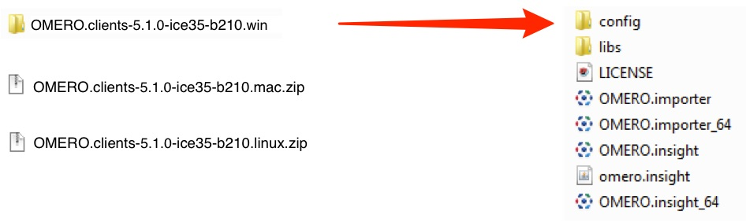
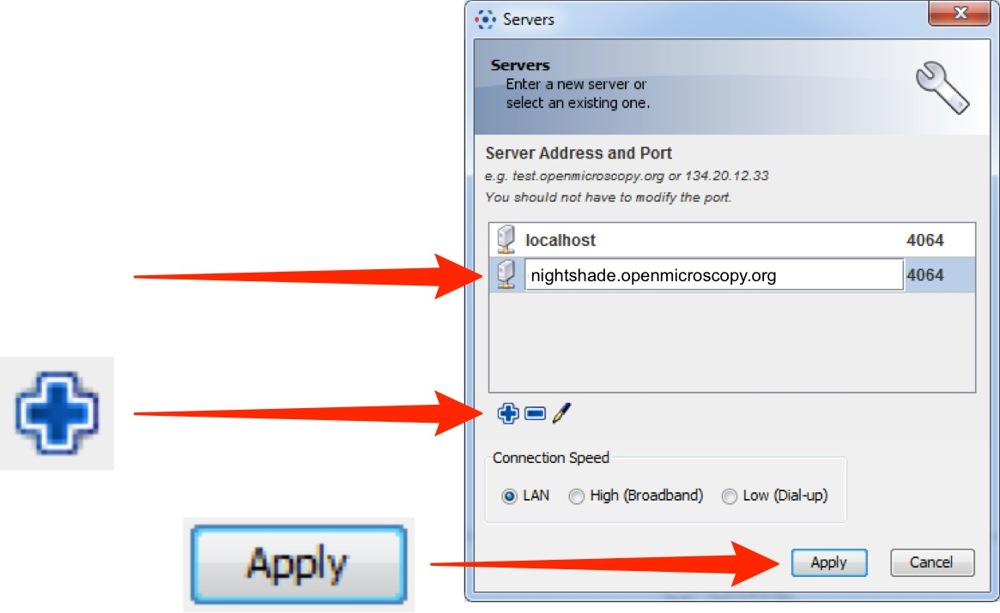

CLS has an OMERO server called Nightshade that allows you to store image data centrally. You can use the OMERO.insight client to upload, view and download data from any computer or laptop on or off-campus.
Your University of Dundee username and password are used to log into the OMERO server, using the URLs given below. Your OMERO account is automatically created the first time you log in and if you change your University of Dundee password, OMERO will automatically reflect this update.
-

Download the OMERO.insight client for your operating system from:
http://downloads.openmicroscopy.org/latest/omero5

-
Expand the OMERO.insight client archive.
Note
As OMERO.insight is a stand-alone Java application, and does not require installation as such, you do not need administrator privileges to install it.
On Windows, expand the .zip archive and move the OMERO.clients folder to your Documents or home directory, or the Programs folder if you have the permissions.
On a Mac move the OMERO.clients folder to your Applications folder.
-
Click on the Spanner icon.

-
In the Add Server dialog box, click on the + icon.
Enter the server address:
nightshade.openmicroscopy.org
Click on Apply.
 -
Enter your University of Dundee Username and Password.
Click on Login.

-
When you log into OMERO for the first time, you will be in a "default" group, which is Private, so only you can see data you place in that group.
Being a member of a read-only or read-annotate group in OMERO allows you to share data with other members of the group.
Your lab or PI may have a group you wish to use for collaborating with colleagues.
Ask your PI to add you to their group or send an email to the Nightshade giving the names of the groups you wish to be added to.
More details on using groups and sharing data is on the Help page:
http://help.openmicroscopy.org/sharing-data.html
-
Click the Importer icon to add image data.
Use the File Chooser in the Importer window to select and queue data for import.
In the location window, if you belong to more than one group, select the group you wish to import the data into.
Choose existing, or create new Projects, Datasets or Screens to import the data into.

-
OMERO.web allows you to view your data from any web browser with the URL:
You do not have to enter a server name.
OMERO.web uses the same login, and has the same functionality, as OMERO.insight, except OMERO.web cannot import data or create Regions of Interest (ROIs).

Detailed User Guides for common workflows using OMERO.insight and OMERO.web are available online and for download at:
For help to get started using OMERO or any other questions please email us at: